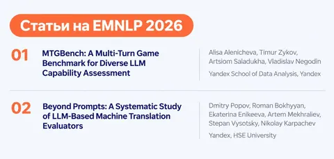

EMNLP (Conference on Empirical Methods in Natural Language Processing) — одна из главных конференций по NLP. В этом году на неё приняли четыре наши статьи. Рассказываем о первых двух.
MTGBench: A Multi-Turn Game Benchmark for Diverse LLM Capability MTG Bench
Над статьёй работали Владислав Негодин из службы аналитики качества генеративных моделей Яндекса, Алиса Аленичева, Тимур Зыков и Артём Солодухо из Школы анализа данных.
Многие бенчмарки оценивают рассуждения LLM в формате «один запрос — один ответ», где условия известны заранее. Многоходовые встречаются реже и смещаются в агентские сценарии. В оценке LLM доминирует английский, хотя бенчмарки, созданные для конкретного языка, лучше согласовываются с человеческими оценками, чем переводные.
Чтобы изучить способности LLM в диалоге, авторы выбрали игры и головоломки. MTGBench включает семь буквенных и семантических игр на русском и английском: Wordle, «Города», «Поле чудес», «Двадцать вопросов», «Двадцать признаков», «Алиас» и «Данетки». В четырёх играх ответы проверяются алгоритмически, в трёх — LLM-судьёй, который прошёл отдельную человеческую валидацию.
На бенчмарке оценили 16 моделей и сравнили их результаты на русском с человеческими: сильнейшие reasoning-модели превзошли средние результаты участников во всех семи играх. Режим рассуждений заметно помогал в буквенных играх, но давал менее выраженный эффект в заданиях на знания и смысл. Для 12 моделей сопоставили игровые результаты с 11 когнитивными тестами: у разных игр обнаружились разные профили связей, хотя самыми устойчивыми в целом оказались связи с причинным рассуждением, прагматикой и планированием.
Код и данные доступны на GitHub.
Beyond Prompts: A Systematic Study of LLM-Based Machine Translation Evaluators
Над статьёй работали инженеры Яндекса: Дмитрий Попов, Екатерина Еникеева, Артём Мехралиев, Степан Высоцкий, Николай Карпачёв, а также Роман Бохян из НИУ ВШЭ. Роман присоединился к исследованию во время стажировки в команде Яндекс Переводчика.
В работе исследуют, способны ли LLM оценивать перевод на уровне экспертов, а также то, каким должен быть дизайн такого оценщика.
Авторы собрали англо-русский датасет из 600 примеров «исходный текст — перевод». В набор вошли ответы 14 систем перевода. Каждый перевод независимо разметили по протоколу RATE (наша работа с EMNLP 2025, о которой мы рассказывали в прошлом году) три эксперта. Дальше сравнили разметку одного эксперта с разметками двух других и таким же способом оценивали LLM.
Также сделали серию проверок, в которых сравнили инструкции разных протоколов и разной подробности, способы формирования примеров, модели и схемы нескольких вызовов. Исследование показало, как на качество оценки влияют подробность инструкции, состав и качество демонстраций, выбор модели и способ объединения отчётов.
Итог — два варианта оценщика ORBIT. ORBIT-SC использует короткую RATE-инструкцию и два отобранных примера с экспертной разметкой, получая подробную оценку перевода за один вызов. В ORBIT-MC независимые отчёты Claude Opus 4.6, GPT-5.4 и Gemini 3.1 Pro объединяются дополнительным вызовом Claude Opus 4.6. Оба варианта ORBIT обнаруживают ошибки на уровне согласованности между экспертами-людьми. По расчётам авторов, даже многовызовный ORBIT-MC обходится примерно в 28 раз дешевле одного прохода профессиональной экспертной разметки, а ORBIT-SC — ещё дешевле.
Проверка не ограничилась собственным англо-русским датасетом. Авторы оценили ORBIT на независимых наборах WMT ещё для пяти языковых направлений. Это экспертная разметка MQM, собранная Google для англо-немецкого и китайско-английского перевода, а также разметка ESA для чешско-немецкого, англо-итальянского и англо-китайского перевода. Таким образом, выбранный дизайн проверили не только на других языках, но и на других протоколах и разметке, собранной другими командами. На MQM оценщики показали сильные результаты, а на ESA особенно хорошо находили серьёзные ошибки.
Датасет и другие материалы опубликованы на Hugging Face.
#YaEMNLP2026
ML Underhood
